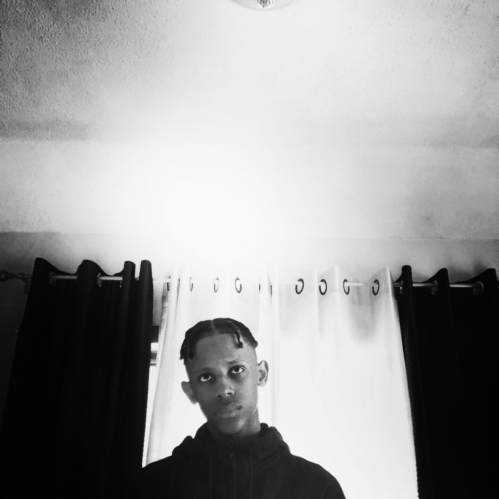

About Me
My name is Lucas Furtado. I'am currently majorin Computer Science at The University of Rhode Island. In 2021 I graduated from Shea Highschool where I Studied and played soccer for two years.
I was born in Cape Verde but at the age of ten I moved to France where I lived for five years. During my free time I like to go to the gym, watch Tv, play sports,learn new things, and most importantly spend time with my familly. I'am a fanactic follower of Real Mardid and Portugal Soccer.